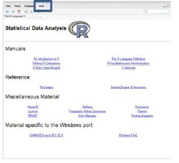
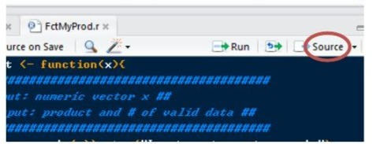
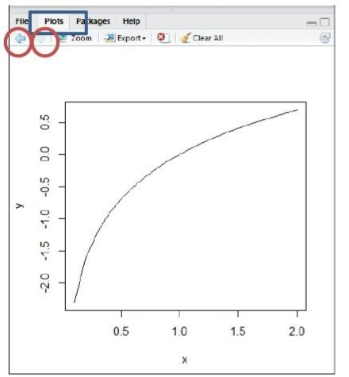

Introduction to Scripts in the RStudio-Environment
1 Preamble
- An excellent website outlining data operations and basic data analysis with R can be found at http://www.statmethods.net. It makes frequent references to the book by Kabacoff.
- Explore the R-Project website: https://www.r-project.org/
- Explore RStudio’s website: https://www.rstudio.com/
2 Reproducible Research
- R is not a menu driven computing environment.
- Rather it mainly uses commands (i.e., functions), which can be pooled together into scripts.
- The disadvantage of this approach is a higher learning effort to know the commands for your specific task.
- A substantial advantage of this approach is that you or anyone else at any time can exactly reproduce and check what you were doing.
Thus R is strongly embedded in the academic paradigm of Reproducible Research.
- You can reuse an existing R scripts to adapt it to your particular data analysis task.
- You know weeks later what you exactly did.
- Furthermore, by analyzing your scripts instructors and teaching assistants can efficiently help you.
3 The RStudio Environment
- Discuss the RStudio interface structure: Editor – Console – Environment/History/Connections – Files/Plots/Packages/Help/Viewer

- Explore RStudio’s Tools and Help tab and R’s help system.
- To avoid the Environment content automatically being saved at the exit and uploaded at the start of R goto Tools ► General ► Basic and select:
- Uncheck “Restore .RData into workspace at startup”
- Set “Save workspace to .RData on exit:” to Never
3.1 File Extensions
Concept of environment, history file and script. The associate file extensions are:
*.RDataor*.rda: Copy of the environment with all its data objects and custom user functions.*.Rhistorycontains all commands issued during a session at the command prompt>.*.Ris a file that contains scripts, which can be a set of basic R data analysis commands, individual functions, or an elaborate program.
3.2 Working Directory
Get and change the working directory where your scripts and workspace are stored and searched by default.
Enter the command getwd() into the editor window and select “Run” from the toolbar. Your current working directory is displayed in the Console below.
Each command in R ends with parentheses, e.g., getwd(), which may include optional parameters. Even if no options are specified a function always ends with parentheses ( ).
3.3 Receiving Help
Receiving help at the command prompt > in the Console:
> help("FunctionName")or short> ?FunctionNameThis searches all active libraries (currently linked to your session) for the help on this function.
Or through the HTML-help menu system:

- Fuzzy help can be obtained with the double question mark
> ??PartNameorhelp.search("PartName"). This searches all installed libraries for the help on functions, data or vignettes containing the string “PartName”.
4 Basic R Mechanics
4.1 Make your Working Directory
My suggestion is that you setup a specific directory on your hard- or jump-drive for this course, e.g., a dedicated folder.
You store your scripts, data etc. in this directory or its subdirectories.

Then set your working directory to this location with the command:
> setwd("E:\\Fall2024\\GettingStartedWithR")Notice the double backward slash
\\here as substitute for the single forward slash/and the use of the quotation"…"to enclose the directory string.
4.2 Interacting with the R-Console
- Collections of editor commands (or programs) can be stored in external
*.Rscript-files (see File menu) - Single commands in the script editor can be run from the command prompt or with Run for a highlighted line or set of highlighted lines in a script.
- To run a script (all lines in your editor) use the Source button.

- In the Console window the arrow Up and Down keys scrolls through the History of previously issued R commands.
- In the Console window previously issued commands can be edited by moving with the arrow keys the edit prompt to a particular location of your command line.
- While being in the Console window, commands with their list of parameters can be broken over several lines. Then the continuing prompt
+will be displayed automatically at the beginning of a new line until the command is completed. - To clean a cluttered Console window use the key combination Ctrl-L or use the broom icon.
5 Variables
The assignment operator to a variable is the backward arrow
<-, i.e., it requires two key-strokes:> my.name <- "Michael"(The variable
my.namewill now show up in the Environment with the content"Michael")Note: The backward arrow
<-is highly preferred over the simple equal sign=, which is reserved for parameter assignments in function calls.
5.1 Variable Names
- Names must begin with a letter and can consist of an alpha/numeric combination of letters including the period
.and/or the underscore_ - Note: Specific characters and keywords such
$@&and%or+-*/and^cannot be used because they have special meanings. For a full list see> ?Reserved - Warning: Variable and function names in R are case sensitive, e.g.,
my.Varandmy.varare different data objects (⇒ characters in wrong cases are extremely difficult to spot in a script) - Tip: Name variables properly so an external reader or you, after a few weeks have passed, can understand what you were doing.
- Use the dot to structure associated variable names, e.g.,
sales.planoandsales.dallas, or the camelback conventionsalesPlanoandsalesDallas - Just for experts: The document google-r-style.pdf suggests professional naming and typesetting conventions of your R code.
5.2 Managing Objects in Environment
Any function or data structure that is defined during a R-session becomes an object in the Environment
These can be removed from the Environment with the remove function:
> rm(ipold)To clean everything from the environment use the nested commands
> rm(list=ls())or the broom icon in the Environment menu bar.Warning: if you happen to name a variable or function identically to an existing R object, which already exists in the search path of your session, that object will be masked and is no longer directly accessible:
> pi # gives the system constant 3.141593 > pi <- 2.71 # this masks the system constant pi > base::pi # pi still be found in its library base. Note the "::" > rm(pi) # removes user's pi and makes the constant pi available
5.3 Hard-wired Values in R
- Logical values
TandF(alternativelyTRUEandFALSEcan be used) - An object without content has the storage value
NULL - Impossible operations, such as
log(-1), lead to a not-a-numberNaN. - Missing values have the value
NA, which stands for not available. - Some predefined numbers are infinity
Infandpi(that is, \(\pi = 3.141593\))
6 Data Representation in R
6.1 Data-Sets
For statistical analyses data-sets are usually arranged in rectangular data-frames and imported from external files (such as SPSS, STATA, EXCEL or DBASE) or embedded in workspaces (with the extension
*.RData) of libraries.For instance, to read an SPSS file use:
> library(foreign) # makes import functions available during a session > setwd("E:\\Lectures2022\\WorkingWithR") > MyPower <- read.spss("DallasTempPower.sav", to.data.frame=T)or more compactly skipping the attachment of library foreign:
> MyPower <- foreign::read.spss("DallasTempPower.sav", to.data.frame=T)Some data file types can also be imported using File ► Import Dataset or with the “Import Dataset” button in the Environment window. Note, however, using the menu violates the reproducible paradigm. Furthermore, the data are imported as a
tibbleand not adata.framewhich can lead to problems.Notice that the object
MyPoweris added as data-frame to your Environment.To calculate a new variable and assign it to the data-frame use the syntax
df$NewVar, e.g.> MyPower$DiffTemp <- MyPower$MaxTemp - MyPower$MinTempCheck the class of an object use:
> class(MyPower) [1] "data.frame"To preview the data-frame double click on it in the Environment.
Each column in a data-frame has an associated elementary data type.
Some R libraries also include their own data-frame. These can be opened by the command:
> data("CPS1985", package="AER")
6.2 Elementary Data Types (mode)
Within a data-frame the variables can be of any elementary R data type (also called mode):
6.2.1 logical
FALSE or TRUE (also binary 0 or 1 and abbreviated F or T), e.g.:
do.I.make.sense <- TRUE6.2.2 character strings
Always enclosed by single or double quotation marks, e.g.:
my.name <- "Michael"6.2.3 factors
Internally each value is stored with a specific integer number. Each integer has a descriptive label assigned to it, which is displayed.
Notice: factor level values are not enclosed within quotation marks. For instance:
> MyPower$Month
[1] JAN FEB MAR APR MAY JUN JUL AUG SEP OCT NOV DEC
[13] JAN FEB MAR APR MAY JUN JUL AUG SEP OCT NOV DEC
[25] JAN FEB MAR APR MAY JUN JUL AUG
Levels: JAN FEB MAR APR MAY JUN JUL AUG SEP OCT NOV DECIndividual factor levels group the observations according to their specific factor level.
The syntax MyPower$Month addresses the factor variable Month in the data-frame MyPower.
6.2.4 numeric
Either real integer, double precision, or complex numbers (not used in this course).
True integer values can be enforced with the added symbol
L:> two <- 2L > typeof(two) [1] "integer"Integers, under specific circumstance, are treated as real numbers or may be coerced to real numbers:
> two.sq <- two * 2.0 > typeof(two.sq) [1] "double"Very small remainders after internal rounding operations are interpreted as zeros, such as:
> (sqrt(2))^2 - 2 [1] 4.440892e-16This discrepancy is due to rounding errors associated with floating point computations, i.e. taking the square root and squaring the remaining results. This problem applies to all software environments, operating systems and computer chips dealing with floating point numbers.
Floating point numbers with an infinite number of digits can only be digitally approximated up to a given depth due to the limited number of bits implemented within operating systems.
E.g., while the constant \(\pi = 3.14\ldots\) has an infinite number of digits, only the first 16 can be numerically represented:
> options(digits=20) > pi [1] 3.1415926535897931
6.2.5 Dates
Dates come in different formats. This course will not cover dates.
6.3 Basic Data Objects in R
6.3.1 scalar
An individual datum. All data objects are composed of a collection of scalars.
6.3.2 vector
Atomic data structure that collects more than one value of identical mode. Example:
> score <- c(23,53,45,30,53,60)or
> catName <- c("Austin","Gretchen","Charlie")where the function c() concatenates – combines – several scalars into a vector.
> length(score) # gives the number of elements in the vectorIndividual elements of a vector can be addressed by indices, e.g. score[2], score[3:5], score[-2], or leading to an outside range error score[99].
Note: if a printed vector stretches over several rows in the console the position of the first value in each row will be numbered by [elementNumber]
Mixture of scalars with different data types will be coerced to the lowest level, i.e., characters:
> mixture <- c(1,2,3,T,pi,"A")
> mixture
[1] "1" "2" "3" "TRUE" "3.14159265358979" "A"6.3.3 matrix
Two-dimensional arrangement of a set of vectors that are all of the same mode and length.
6.3.4 data frames
Collection of vectors of the same length but perhaps different mode per column.
6.3.5 list
Collection of vectors of any type and length.
6.4 Inspecting Data Objects
To obtain information about a data object and to look at its structure use the function str():
> str(MyPower)
'data.frame': 32 obs. of 8 variables:
$ SeqID : num 1 2 3 4 5 6 7 8 9 10 ...
$ Year : num 2009 2009 2009 2009 2009 ...
$ Month : Factor w/ 12 levels "JAN","FEB","MAR",...: 1 2 3 4 5 6 7...
$ DaysBill: num 34 29 30 32 29 30 32 29 30 31 ...
- attr(*, "codepage")= int 12527 Object Oriented Philosophy
R is an object oriented data analysis language, which is centered around functions that are applied to objects.
Functions may change their behavior – if properly programmed – in response to the class of their input argument.
All data objects have an object class assigned to them. This may be rudimentary, such as being a
numericvector, or advanced, such as the output from a regression model.All R commands are implemented as functions with opening and closing parentheses at the end of the function name.
A function may not use [a] specific input arguments, e.g., the function
getwd(), or [b] a selection of arguments, [c] some of these arguments may have default values and only need to be issued when these defaults are overwritten, and [d] some arguments are purely positional (without a leading keyword). For instance:> result <- myFunc(pos1, pos2, keyword1=TRUE, keyword2="align")where the object class of
resultis assigned by the functionmyFuncand the behavior of the function is defined by the object class of its first positional input argumentpos1.Depending on the class of the input arguments, an object-specific function will be used.
Example: notice amorph behavior of the
summary()function:> class(MyPower) > summary(MyPower) # Get summary statistics of all variables > ## run a regression model and save output into object MyReg > MyReg <- lm(MaxTemp ~ MinTemp, data=MyPower) > class(MyReg) > summary(MyReg) # view key results of the regression analysisIf just the object name is entered at the command prompt its default print method will be used. For instance:
> MyReg # prints a list of MyReg components into the console
8 Saving Analysis Results, Plots and Data (not using R MarkDown)
8.1 Analysis Results and Plots
The easiest way of saving [a] Console output and [b] generated plots in the graphics window are to copy and paste them into a graphically enhanced text editor such as Word.
Important: Any text output needs to be typeset in a fix pitch font such as Courier New. Otherwise the aligned column formatting of the output will be lost. Perhaps also reduce the font size and line-spacing of imported output as well as switch to a landscape layout for long lines of output.
8.2 Data
The collection of all variables, data-frames and functions, which were created during a session, can be saved for subsequent sessions in a workspace.
Before saving the workspace non-desired data-objects, variables and functions should be dropped with the remove command:
> rm(objectName)8.3 Exporting Data
Data-frames within the workspace can also be exported into different file formats (see the package foreign or connections to SQL servers).
8.4 Command History
All commands, which were issued during session, can be saved into a history file.

9 Working with some R functions
9.1 Exercise
> x <- seq(0.1, 2, by=0.1) # sequence of numbers: 0.1, 0.2, …, 2
> x # show numbers
> y <- log(x) # calculate the natural logarithm
> plot(x, y) # Plot y against x
> plot(y ~ x) # same plot conceiving y as a function of x
> help(plot) # Explore options
> plot(x, y, type="l") # Connect points by lines9.2 Plots Window
Select in the Plots window scroll through your list of plots with the arrow icons:

9.3 Exercise (continued)
> z <- rnorm(length(x)) # vector of standard normal random numbers
> mat <- cbind(x, y, z) # merge vectors of same length into a matrix
> dim(mat) # see the dimensions of the matrix
> summary(mat) # get statistics of each matrix column
> class(mat) # evaluate object type
[1] "matrix"
> df <- data.frame(x=x, xlog=y, rand=z) # build dataframe
> class(df)
[1] "data.frame"10 Working with Data
10.1 Data-Frames
- Data-frames can pool several vectors of same length but potentially of different data-types together.
- Almost all statistical analysis functions are defined on data-frames.
> catName <- c("Austin", "Gretchen", "Charlie") # character vector
> catAge <- c(9, 10, 20) # numeric vector
> my.data <- data.frame(Name=catName, Age=catAge) # Define data-frame
> my.data # Show data-frame
Name Age
1 Austin 9
2 Gretchen 10
3 Charlie 20The variables
catNameandcatAgeare stored now in the data framemy.dataunder new namesNameandAgeTo access individual variables in the data-frame several commands can be used:
> my.data$Name
> my.data["Name"]
> my.data[1]
> with(my.data, Name)
> my.data[ , "Name"]
> my.data[ , 1]11 List Objects
Note: R functions can only return one data object. However, different data object can be bundled into a list and returned by the function.
List objects allow to link data objects of different types and different length together into a container:
> A <- matrix(c(1,2,3,4,5,6), nrow=2, ncol=3) # 2 x 3 matrix
> my.list <- list(name = catName, age = catAge, mat = A)
> my.list
$name
[1] "Austin" "Gretchen" "Charlie"
$age
[1] 9 10 20
$mat
[,1] [,2] [,3]
[1,] 1 3 5
[2,] 2 4 6- Individual objects of the list can be addressed either by:
> my.list$name
[1] "Austin" "Gretchen" "Charlie"
> my.list[[1]]
[1] "Austin" "Gretchen" "Charlie"- Individual elements of an object in a list can be addressed by:
> my.list$name[1]
[1] "Austin"- To delete an object in a list assign the
NULLvalue:
> my.list$mat <- NULL- To get information about an object use the
attributesfunction:
> attributes(my.list)
$names
[1] "name" "age"- Remove the objects
my.listand the matrixAfrom the workspace:
> rm(my.list, A)12 Matrix Objects
Matrices can store vectors of same length and same data-type in a rectangular arrangement
To generate a matrix:
Vector of 12 elements:
> b <- c(10,20,30,40,15,25,35,45,1,2,3,4)Place elements into 4×3 matrix:
> mat <- matrix(b, nrow=4, ncol=3)
To retrieve one element at the index locations row and col use the syntax
mat[row,col]A sequence of values
mat[1:2,](here the first and second row)Exclusion of elements
mat[-1,](here the first row)One row
mat[1,]or one columnmat[,2]Also logical operations are permitted (here the first and second column):
> select <- c(T, T, F)
> mat[, select]
3.2.1 Comments:
The returned string, e.g.,
"C:/Users/Michael/Documents", is the path to the working directory. In R strings are always enclosed by quotation marks, i.e.,"…".The Windows convention is to separate sub-directories by a backward slash
\.However, R uses the forward slash
/or alternatively a double backward slash\\.In R the single backslash
\is reserved to start an escape character, for instance,\nbecomes a line break and carriage return in text output, e.g.,> cat("First line\n Second line")is shown in the Console on two lines.The character
>in the Console window is the command prompt which indicates that R is ready to receive new commands. It shows up when R completed executing a script.The ESC key or pressing the stop icon in the Console window – available while a script is executing – can terminate the ongoing execution of a script.